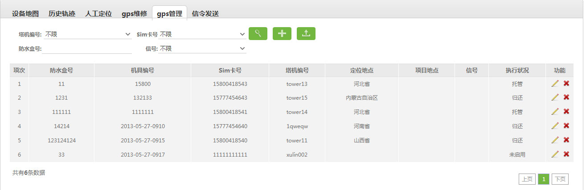

10.5、GPS管理

业务背景：
定位地点：gps 对应的sim卡号返回的经纬度所对应的地点，精确到 市一级;
项目地点：对应项目信息中的项目地点;
信号：异常、正常，超过 12小时没有回报的算异常;
状态：返修、在使用 （返修状态：没有绑定塔机编号的）;
编辑中的“返修”功能:
1. 点击返修，跳转至“新增GPS维修”页面；
2.填写GPS维修信息，并保存。（GPS 的SIM卡号与塔机编号解除绑定，GPS管理中状态置为“返修”）；
3.取消GPS维修信息，则返回至GPS管理的编辑页面。
说明：
1、 进行GPS查询，查询条件：塔机编号、sim卡号、防水盒号、信号；
进行GPS查询，查询条件：塔机编号、sim卡号、防水盒号、信号；
2、 新增GPS信息,
新增GPS信息, 导出查询的所有GPS内容;
导出查询的所有GPS内容;
3、 编辑、和
编辑、和 删除GPS信息.
删除GPS信息.